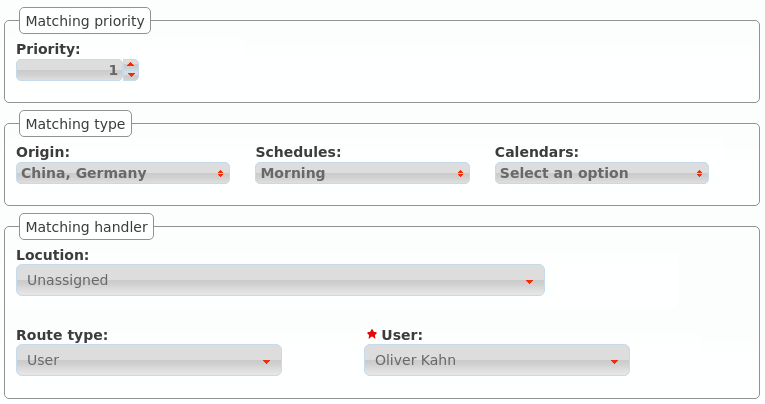
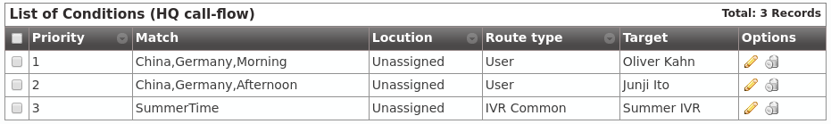
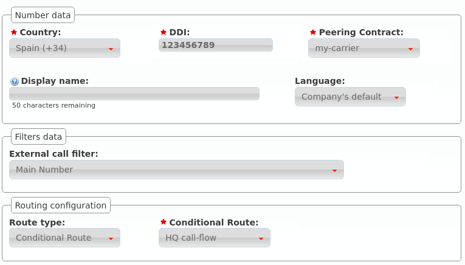

Conditional routes¶
Conditional routes allows changing a call logic depending on:
- Who is calling.
- What time is calling.
- What day is calling.
- Route lock status
These routes are electable in three sections:
- DDIs
- Extensions
- IVR custom options
Tip
Remaining sections could use conditional routes creating an extension that point to a conditional route first, and routing to this extension.
Creating a conditional route¶
First of all we create a conditional route in Conditional routes section:

On creation we define what should be done with a call that does not satisfy any of the rules described below.
Adding rules¶
Once created, we need to add rules, for example:
Calls from Japan and Germany received in the morning to an specific user
Calls from Japan and Germany received in the afternoon to another user

Override the reception IVR for summer days

With this example rules, our example conditional route will look like this:
Note
Since IvozProvider 1.7 Route locks (see Route locks) can be used as a criteria too.
Some notes about this example:
- Rules are evaluated following the metric parameter. Once a rule matches, its logic is applied.
- Rules may have from 1 to 4 criteria:
- None, one or more matchlist (pre-created, see Match Lists)
- None, one or more schedules (pre-created, see Schedules)
- None, one or more calendar (pre-created, see Calendars)
- None, one or more route locks (pre-created, see Route locks)
- These 4 criteria are combined (applying an AND logic).
Important
When adding more than one route lock, if any of them is Opened, this criteria will be considered as fulfilled.
Using a conditional route¶
The behaviour when an IVR option or an extension is routed to a conditional route is easy to understand, but using conditional routes with DDIs need an additional explanation.
Imagine this scenario:
DDI has an external call filter and is routed to the new conditional route.
When a call is received:
- External call filter is evaluated:
- If current day is marked in any calendar, the holiday logic applies.
- If current time is not inside any time-gap, out-of-schedule logic applies.
- If external call filter logics have not applied, conditional route is evaluated.
Attention
Conditional route is not intented as an external call filter replacement. Filter is evaluated first, conditional route afterwards.